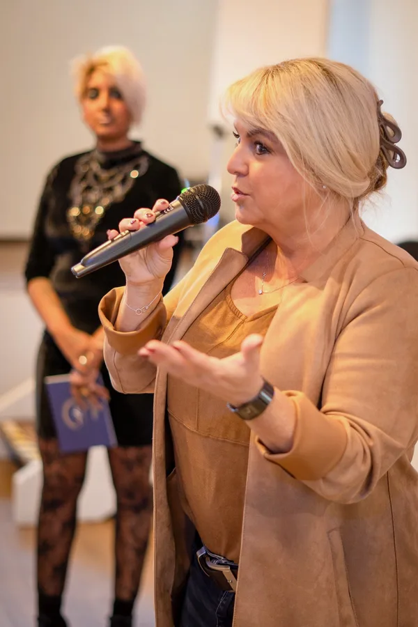
Keynotes
Perspektiven verändern
Perspektiven verändern. Menschen für Veränderung öffnen.
Aktuell: 7-Tage-Wirkungskraft-Challenge · Start 26. OktoberChallenge · Start 26.10. · Platz sichernTermin bestätigen
Für Geschäftsführung, Führungskräfte, HR, Vertrieb und Veranstalter.
HauptwegeFür Coaches, Trainer, Speaker, Berater, Autoren und Selbstständige.
HauptwegeClaudia gibt Unternehmensmomenten eine Stimme, eine Richtung und eine Wirkung.
Claudia buchenWorkshop, 90-Tage-Programm oder Sparring: vor Ort oder online.
FormateWer hier spricht und warum Wirkung ihr Lebensthema ist.
Hauptwege
Seit 37 Jahren als Coach und Trainerin unterwegs, heute auch als Keynote Speakerin.
Claudia kennenlernen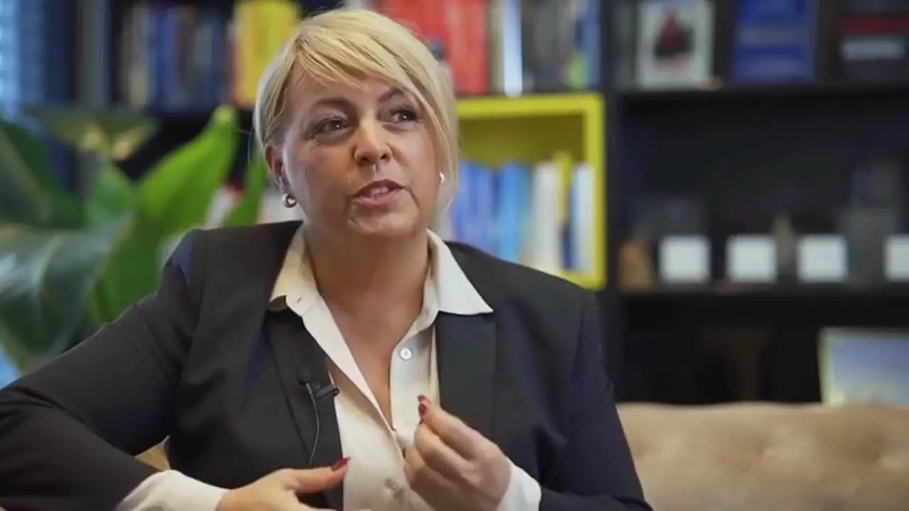
Wer Vertrauen weckt, gewinnt.
Claudia Conen unterstützt dich dabei, dein Produkt, deine Botschaft und deinen Expertenstatus unverfälscht zu kommunizieren: auf der Bühne, in Social Media und im Live-Gespräch.Vorschlag
Text und Aufnahme fehlen noch: aus deiner PDF „Audio-Skripte und Platzierungen“.
Bühnen, Medien und Partner
KI beschleunigt Prozesse. Doch Akzeptanz, Vertrauen und Veränderungsbereitschaft entstehen zwischen Menschen.
KI kann Inhalte erzeugen. Wirkung entsteht durch den Menschen.
Wenn Führungskräfte fachlich verstanden, aber emotional nicht erreicht werden, bleibt Veränderung auf dem Papier.
Menschen vertrauen Menschen, deren Worte und Haltung zusammenpassen.
Claudia Conen stärkt die menschliche Wirkungskraft in Unternehmen – damit Führung, Kommunikation und Veränderung im KI-Zeitalter Vertrauen schaffen und Menschen bewegen.
Kartentexte: Vorschlag
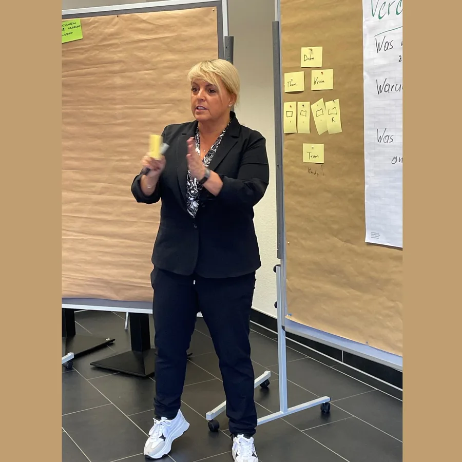
Führungskräfte werden fachlich verstanden, emotional aber nicht erreicht. Claudia arbeitet mit ihnen daran, Orientierung so zu vermitteln, dass Teams sie verstehen, glauben und mittragen.
Führung & Kommunikation ansehen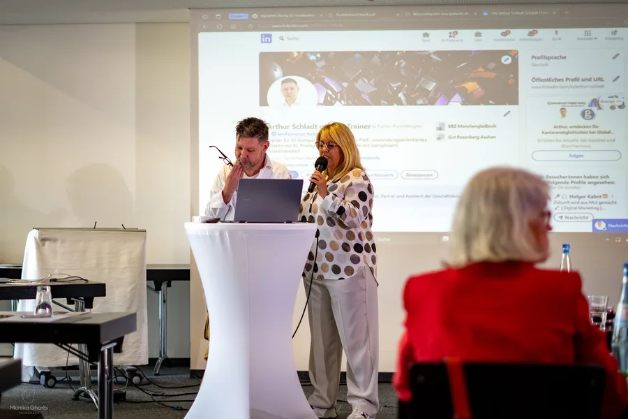
Werkzeuge allein verändern keine Gewohnheiten. Claudia macht Veränderung besprechbar: Führungskräfte erklären glaubwürdig, was bleibt und was sich ändert. Aus Verunsicherung wird Mitwirkung.
Mensch & KI im Unternehmen ansehenNicht am Wissen, sondern am Ton: am Telefon, beim Kunden, im Team. Claudia trainiert Vertriebsteams, den Menschen hinter der Entscheidung zu erreichen. Mit Worten, die Vertrauen wecken.
Vertrieb & Emotional Sales ansehen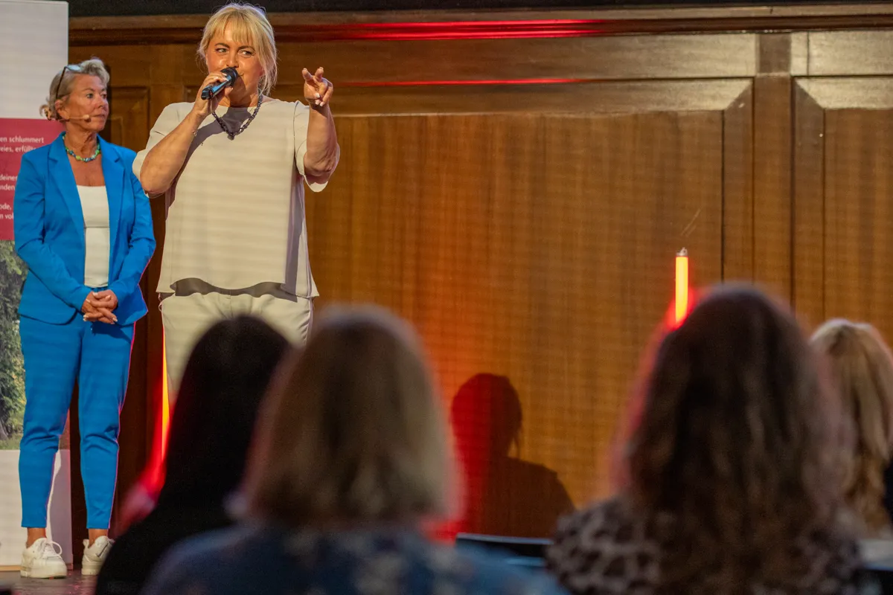
Für Kick-off, Konferenz oder Führungstreffen: Claudias Keynotes geben deinem Publikum eine gemeinsame Sprache für menschliche Wirkung im KI-Zeitalter. Auf Wunsch mit Transfer-Lab, damit der Impuls im Alltag ankommt.
Keynotes ansehen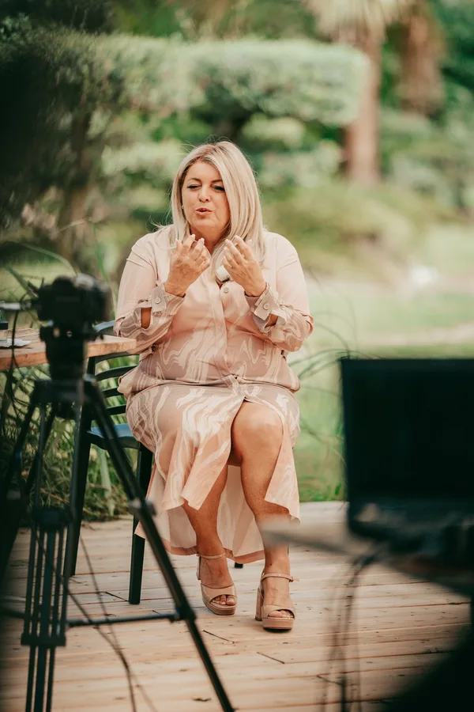
Videos, Webinare, Online-Meetings: Hier entscheidet sich, ob Kompetenz spürbar wird. Claudia trainiert Stimme, Blick und Haltung vor der Kamera, damit du digital genauso glaubwürdig wirkst wie im Raum.
Stimme, Kamera & Präsenz ansehen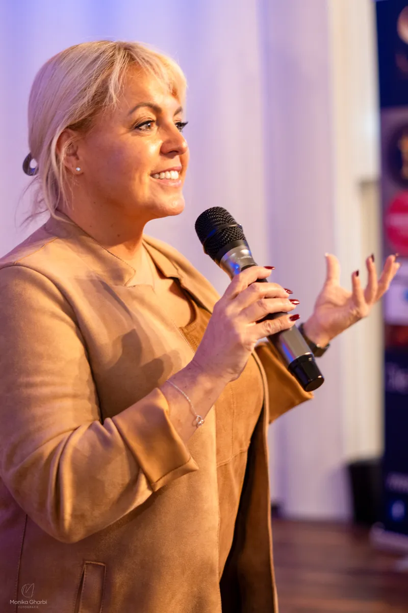
Im Pitch, vor dem Vorstand oder auf der Messe zählt, was hängen bleibt. Claudia entwickelt mit dir eine Botschaft, die in einem Satz trägt, und einen Auftritt, der sie glaubwürdig macht.
Storytelling & Pitch ansehen
Perspektiven verändern. Menschen für Veränderung öffnen.
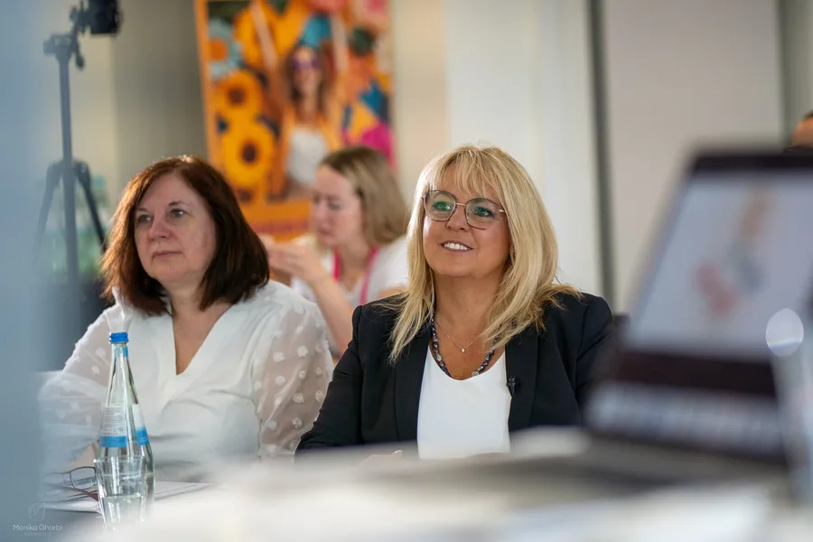
Führung, Kommunikation und Wirkung praktisch trainieren.
Menschliche Wirkung nachhaltig in Unternehmen verankern.
Worte können erklären, wofür Claudia Conen steht. Ihre Stimme und Präsenz lassen dich erleben, wie sich Wirkung anfühlt.
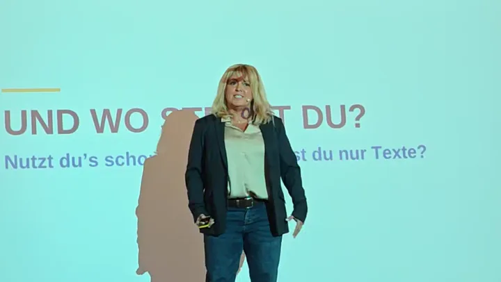
0:36Also es ist egal, mit wem du redest, ob du hier mit jemandem redest, an der Kasse mit jemandem, im Aufzug mit jemandem redest. Du musst dir immer vorstellen, du wirkst in jedem Moment. Was ist, wenn dir beim Wandern dein bester Kunde begegnet, der dir einen festen Auftrag gibt? Wie machst du das mit deinem Gesicht, wenn du unterwegs bist? Wie redest du mit der Kassiererin? Wie redest du mit dem Menschen, der dir vielleicht kein Geld gibt im ersten Moment? Es hat was mit deinem eigenen Ich zu tun, mit welcher Haltung du mit Menschen umgehst, mit welcher Wertschätzung du mit Menschen umgehst. Und dann ziehst du automatisch Menschen an.
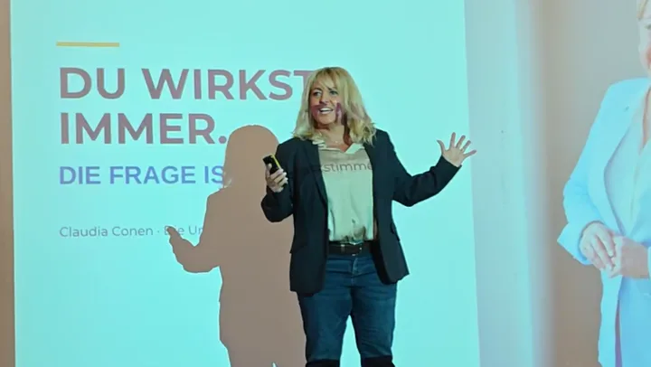
0:25Und genau das ist heute das Thema. Und warum ich hier bin? Ich bin hier, um die Menschen wachzurütteln. Ich bin hier, um endlich dafür zu sorgen, dass jeder Mensch kapiert – Entschuldigung, weil ich das so krass sage – kapiert, dass wir aufhören müssen, zu denken, wir müssen perfekt sein. Denn wir sind das beste Marketinginstrument, was es gibt. Weil wir sind ein Unikat.
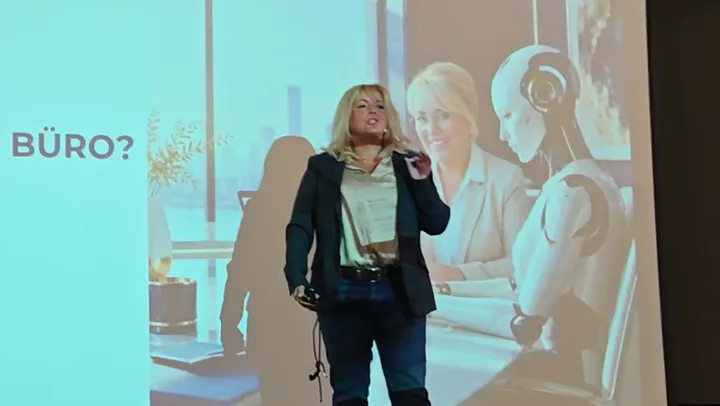
0:25Wenn wir die Zukunft nicht aufhalten können, das ist schon immer so wahr, nutzt sie clever, damit sie euch Lebenszeit schenkt. Nutzt sie, weil Lebenszeit ist das wertvollste Gut, was wir besitzen. Und ihr könnt diese Lebenszeit dann wiederum einsetzen, um echte Kontakte zu knüpfen, um auf Netzwerkveranstaltungen zu gehen.
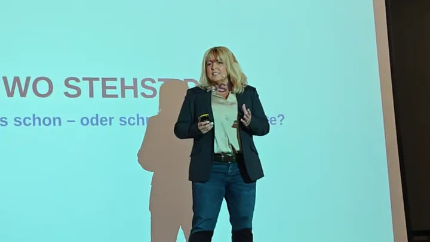
0:33Aber ich bin einfach ich, und ich möchte den Menschen mitgeben: So wie du hier sitzt, bist du gut genug. Das Einzige, was es braucht, ist die Wertschätzung nach außen für den anderen. Was willst du dem eigentlich mitgeben und das klar zu kommunizieren? Dann haben wir eine Chance, und Netzwerken ist das Wichtigste, was du tun kannst. Netzwerken, echt und live, aber kohärent mit dem, was du nach außen zeigst. Worte, Bilder, Wirkung, Videos, es muss kohärent sein.
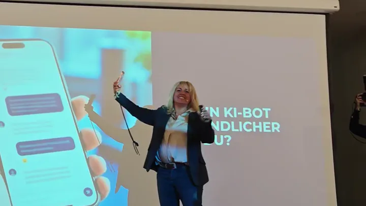
0:16Go! Jetzt! All diese Menschen, die möchten in ihrem Beruf Erfolg haben. Sie sind selbstständig, Unternehmer und Speaker, und ich habe sie aufgefordert, jetzt mit ihrer Persönlichkeit einfach Werbung zu machen. Authentisch, echt.
Echte Ausschnitte, ungeschnitten im Satz, mit Untertiteln. Sie starten nur auf Klick.
Wofür stehst du?
Werte und Haltung, Positionierung, Personal Brand, Unverwechselbarkeit.
Was soll bei deinem Gegenüber ankommen?
Storytelling, Elevator Pitch, Keynote-Botschaft, Emotional Sales, Gesprächsführung.
Wie werden Persönlichkeit und Botschaft hörbar und sichtbar?
Stimme, Körpersprache, Bühnenwirkung, souveräner Kameraauftritt.
Wie unterstützt KI dich, ohne dich austauschbar zu machen?
Vorbereitung, Content, persönliche Sprachprofile, KI-Agenten, Zeit für Beziehungen.
Erst den persönlichen und unternehmerischen Kern klären. Dann die Botschaft formen. Anschließend die Wirkung verkörpern. Erst danach KI gezielt als Verstärker einsetzen.
Mitarbeitende und Kunden glauben, was gesagt wird, weil Worte, Stimme und Haltung zusammenpassen.
Veränderung wird nicht nur angekündigt. Sie wird verstanden und mitgetragen.
Aus Zuhören wird Handeln. Teams setzen um, statt abzuwarten.
Und KI? Sie wird zum Verstärker für das, was Menschen ausmacht, nicht zum Ersatz.
15 von 35 Stimmen · Video- und Textstimmen, wörtlich und mit Quelle
„Sie hat jedes Mal ein unfassbares Engagement an den Tag gelegt.“
Ich persönlich kann die Frau Conen nur jedem wärmstens ans Herz legen, denn wir als Video-Marketing-Firma haben schon des Öfteren mit ihr zusammengearbeitet und sie des Öfteren in Aktion gesehen.
Und es spielt keine Rolle, ob sie jetzt Menschen dazu bewegt hat, eigene Texte zu verfassen und sie anschließend vorzutragen, ob sie selbst gesprochen hat oder ob sie selbst als Speaker unterwegs war. Sie hat jedes Mal ein unfassbares Engagement an den Tag gelegt, und es ist mir einfach immer wieder eine Freude gewesen, ihr beim Arbeiten zuzuschauen.
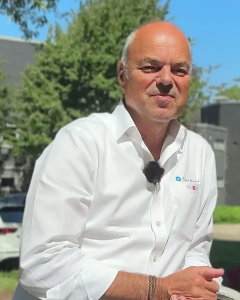
0:16„Wie fühlen sich Kunden richtig angesprochen?“
Ich bin Videocoach und bei der Claudia, der lerne ich in dem Seminar, noch mal die Botschaften zu vertiefen. Worum geht es wirklich? Wie fühlen sich Kunden richtig angesprochen? Und da kann ich wieder so viel lernen. Das ist cool, das kann ich natürlich täglich nutzen.
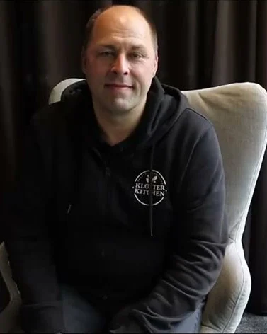
1:00„Ich kann nur die Zusammenarbeit mit Claudia wärmstens empfehlen.“
Wir wollten einen extrem guten Text besprochen auf unserem normalen Anrufbeantworter und auf anderen Medien nutzen.
Claudia hat sich bereit erklärt, auf eine sehr unkomplizierte Weise das mit uns zu machen, und hat auch mit uns sehr schnell daran gearbeitet, dass wir jetzt einen extrem gut gesprochenen, von ihr gesprochenen Text auf unserem Anrufbeantworter haben.
Die Zusammenarbeit war echt gut und sehr harmonisch und hat auch sehr viel Spaß gemacht.
„Claudia Conen hat eine beeindruckende Stimme.“
Und dazu ist sie noch schnell, kompetent und unkompliziert. Wir als Verlag arbeiten gerne mit ihr.
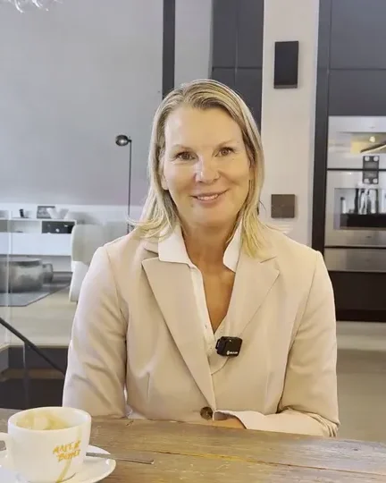
2:10„Ich habe sie wirklich abgelegt, diese Scheu vor der Kamera.“
Ich möchte mich nie wieder im Leben verstellen.
Ich interessiere mich für den Menschen dahinter, und zu dem rede ich. Und nicht dieses ganze Kopfkino. Das hast du mir wirklich sehr deutlich beigebracht.
Du bist wahnsinnig vertrauensvoll, und ich habe mich gleich gut aufgehoben gefühlt.
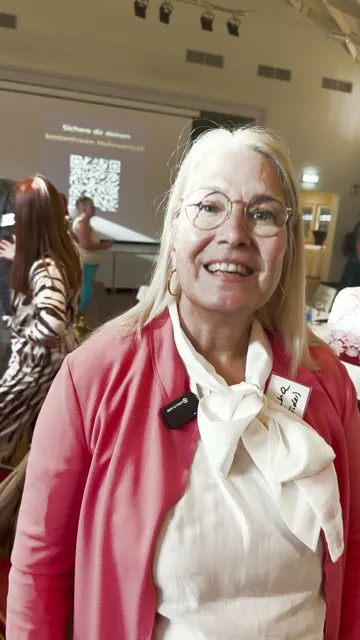
0:44„… dass ich zum ersten Mal begriffen habe, wie wichtig das für unser Business wirklich ist.“
Der Vortrag zur KI von der Claudia Conen, den fand ich super interessant. Natürlich habe ich mich damit schon beschäftigt mit den Themen, aber sie hat das so dargestellt, so plastisch, dass ich zum ersten Mal begriffen habe, wie wichtig das für unser Business wirklich ist. Und dass wir wirklich für die Zukunft nicht ohne dem in die Zukunft gehen können.
Und sie hat das so beschrieben, dass ich genau weiß, dass sie sich mit der Thematik intensiv auseinandergesetzt hat. Und das finde ich total wichtig, weil dann würde ich immer zur Claudia gehen, mit diesem Thema …
„Die Texte fühlen sich für mich so an, als hätte ich sie selber gesagt.“
Claudia Conen kann sich super in denjenigen hineinversetzen, mit dem sie zusammenarbeitet. Und zwar habe ich mir schon gedacht, dass es ein bisschen schwieriger wird, mit mir zu arbeiten, weil ich ein sehr hibbeliger Typ bin. Sie konnte aber komplett meine Art aufnehmen und mich sogar noch ein ganz kleines bisschen mehr runterfahren, dass ich einfach entspannter mit mir selber umgehen kann, wenn ich Dinge ausarbeite und die dann auch wirklich vor der Kamera sage.
Ich bin ein unheimlich perfektionistischer Typ, aber ich bin nicht die Person, die unheimlich viel redet, und nicht vor Publikum redet, auch nicht so viel vor der Kamera. … Und bei Claudia Conen war es wirklich für mich so, dass sie mich einfach aufgenommen hat. Ich habe mich direkt ganz sicher gefühlt, weil sie einfach ein Gespür dafür hat, wie der Mensch sich fühlt.
… Und das hat mich unheimlich nach vorne gebracht, mir unheimlich viel Zeit gespart. Und das war für mich einfach das Beste, was mir passieren konnte, dass wir uns kennengelernt haben und ich bei ihr dann das Coaching gebucht habe.
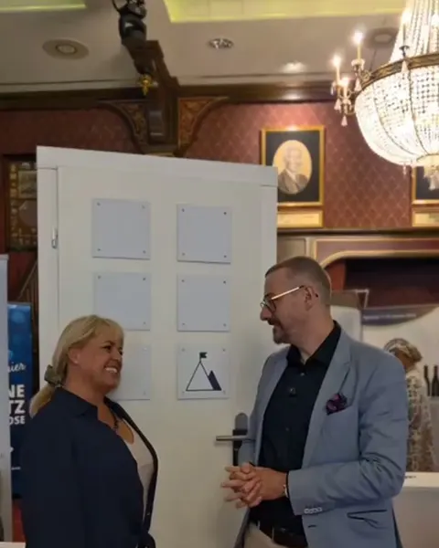
3:54„… und auch meine Vision wie nochmal neu entdeckt.“
Das Gefühl war für mich unglaublich intensiv. Also ich habe ganz viele Bilder von dieser Zeit, ganz viele Emotionen von dieser Zeit bei mir. Es war wirklich eine Reise.
Ich erzähle ja auch in meiner Arbeit über sieben Türen und über diese Reise. Und es war auch eine Reise nochmals für mich. Also ich habe diese Reise, die ich auch mit anderen Menschen mache, für mich nochmals gemeinsam mit dir erlebt und auch meine Vision wie nochmal neu entdeckt.
Du hast mich unterstützt, diesen emotionalen Teil zu machen. Ich bin ja sehr ein blauer Typ, sehr rational und durchdacht, und so diese Verbindung zu mir selbst, auch zu Themen von mir, die ich schon ganz lange gehütet habe irgendwo, nochmals für auch diesen Teil bei mir anzuschauen und so auch diese Symbolik herauszuarbeiten.
„Du hast sie ins Bewusstsein gesprochen, dass man die Angst davor sich nehmen darf.“
Also ich glaube, dass der Vortrag das transportiert hat, was wir eigentlich auch bei oneBanking und auch bei AI Assistance und bei Connect wirklich transportieren wollen, ist, dass die KI den Menschen nicht ersetzen soll, sondern sie soll den Menschen unterstützen.
Ja, du hast sie natürlich ins Bewusstsein gesprochen, dass man die Angst davor sich nehmen darf, aber dazu gehört es auch, im Austausch zu bleiben, weil erst in dem Dialog auch Angst genommen werden kann. Und das ist eigentlich dein Vortrag, den du den Menschen dann auch gibst, auch ein bisschen dieses Bewusstsein und diese Offenheit einfach auch darzustellen und die Angst zu nehmen.
„Du hast das so gut immer wieder aufgefangen, mich begleitet, mich wieder reingeführt.“
Das ist völlig neu. Ich merke dann, dass ich halt ja auch total eingespannt bin, Lampenfieber habe. Ich denke dann die ganze Zeit daran, ja gut, das nimmt man jetzt auf, das kommt dann irgendwo im Internet, das gucken sich irgendwelche Leute an.
Dann will man das alles irgendwie perfekt und richtig machen, aber man weiß gar nicht, wie perfekt oder richtig überhaupt ist. Dann ist es mir heiß, dann ist es mir kalt, dann geht es wieder, dann bin ich wieder im Fluss mit meinem Thema.
Aber ich muss sagen, du hast das so gut immer wieder aufgefangen, mich begleitet, mich wieder reingeführt. Also ich finde das total super, mit dir zu arbeiten. Danke schön.
„… habe gerne deiner wundervollen Stimme gefolgt.“
Also, liebe Claudia, ich fand deinen Vortrag über KI und die Zukunft wirklich super, super spannend und auch habe ich gerne deiner wundervollen Stimme gefolgt, sehr, sehr spannend, am Puls der Zeit, was die Zukunft bringen wird.
Die negativen und die positiven Seiten dessen und die Essenz des Ganzen, dass es doch sehr, sehr wichtig ist, sich am Puls der Zeit zu orientieren und sich mit diesen Themen auseinanderzusetzen und sich auch entsprechend zu positionieren und in die Sichtbarkeit zu bringen.
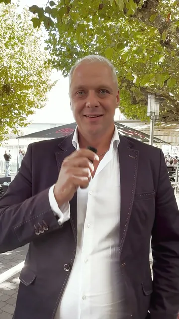
1:29„Ich bin hin und weg gewesen.“
Das war heute ganz toll, was ich da erleben durfte mit der Claudia Conen. Sie hat einen tollen Vortrag gehalten über KI und das ist wirklich ein spannendes Thema. Auch was das Thema angeht mit KI-Agenten und KI-Assistenten, den Menschen den Unterschied ein bisschen näher zu bringen, ist immer ein ganz wichtiger und entscheidender Punkt.
Es ist gerade immer das ganz Wichtige, dass man Leute auch connectet mit KI und das Verständnis ganz nahe bringt. Und das hat sie wirklich super gemacht in dem Vortrag. Ich bin hin und weg gewesen.
„Ich lern bei Claudia richtig viel.“
Claudia hat diesen Workshop sehr gut organisiert und ich fühle mich sehr wohl. Ich lern bei Claudia richtig viel.
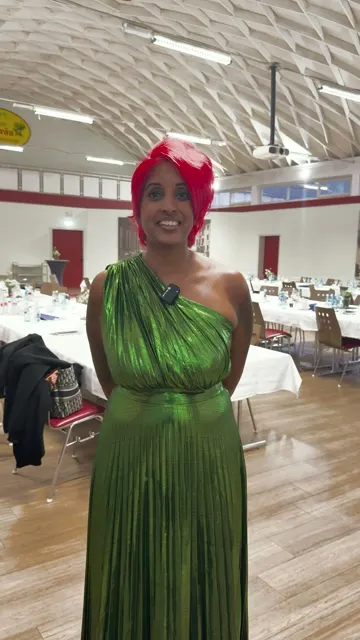
1:25„… aber sie kann auch hinhören, sie kann zuhören …“
Ein Teammember ist Claudia Conen von unserer Create4We Community, wo sie regelmäßig ihre wertvollen Inhalte mit unseren Kunden, mit unseren Menschen teilt.
Was ich an Claudia so schätze, ist zum Teil ihre sehr direkte Art, aber sie kann auch hinhören, sie kann zuhören, sie ist einfach da, sie beobachtet und zum richtigen Moment greift sie dann ein, im positiven Sinne natürlich, und hat auch heute wieder die Bühne gerockt mit ihrer Keynote zum Thema KI.
Diese Verwandlungen auch, was sie auf eine ehrliche Art und Weise zeigt, aber auch ihre Menschlichkeit, wo dann eben die KI auch mal fehl am Platz sein darf. Und genau das liebe ich an Claudia. Danke, Claudia.
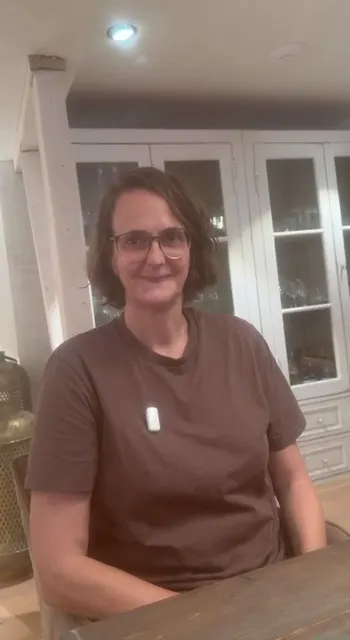
2:00„Die Atmosphäre ist sehr herzlich, sehr direkt und sehr intensiv, aber wir lachen auch viel gemeinsam.“
Ich habe mit Claudia zusammen eine Rede erstellt und einstudiert, die ich vor einem technischen Publikum halte. Ich bin Ingenieurin.
Sie schmeißt einen auch gerne mal ins kalte Wasser.
Mit vollem Herzblut dabei und fordert dich auch gerne heraus.
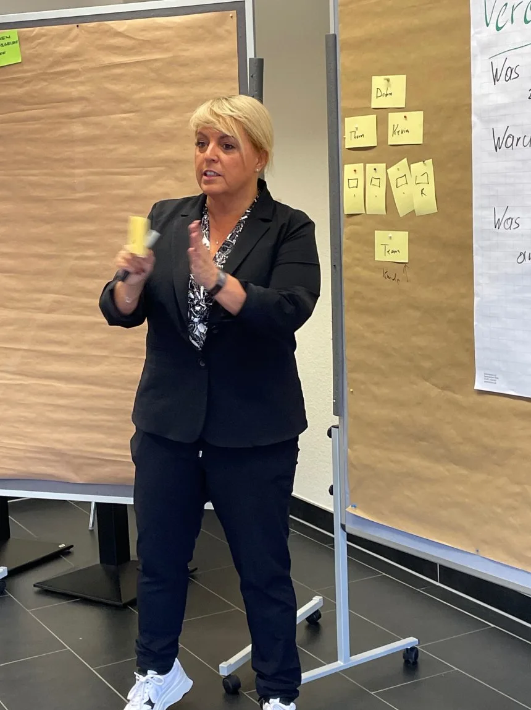
Claudia Conen stärkt die menschliche Wirkungskraft in Unternehmen – damit Führung, Kommunikation und Veränderung im KI-Zeitalter Vertrauen schaffen und Menschen bewegen.
Seit 37 Jahren ist sie als Coach und Trainerin unterwegs, heute auch als Keynote Speakerin. Persönlichkeit, Botschaft, Stimme und Präsenz sind ihre Werkzeuge – KI setzt sie als Verstärker ein, nicht als Ersatz.Vorschlag
Persönlichkeit vor Perfektion.
Claudia kennenlernenIm Gespräch klären wir Anlass, Publikum und Ziel – und welches Format passt: Keynote, Workshop oder Entwicklungsprogramm.Vorschlag
Unverbindliches Gespräch vereinbaren